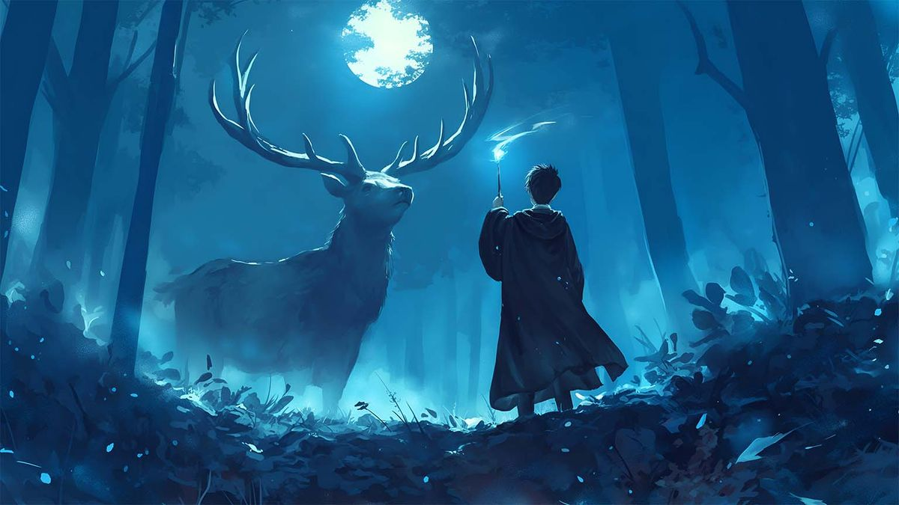
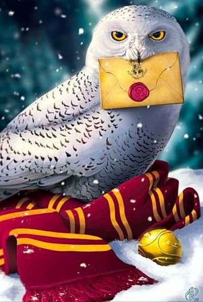
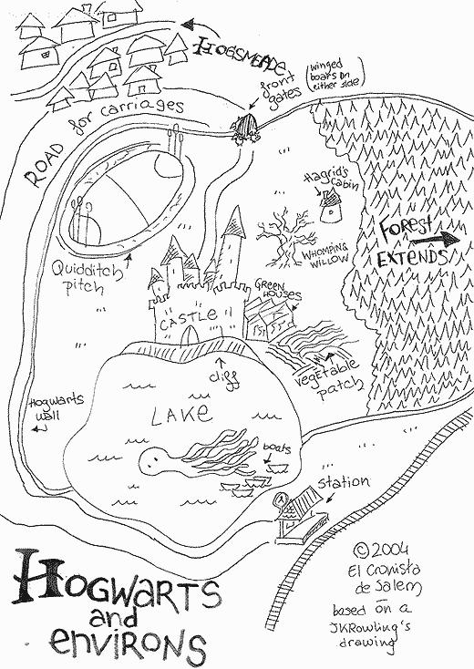
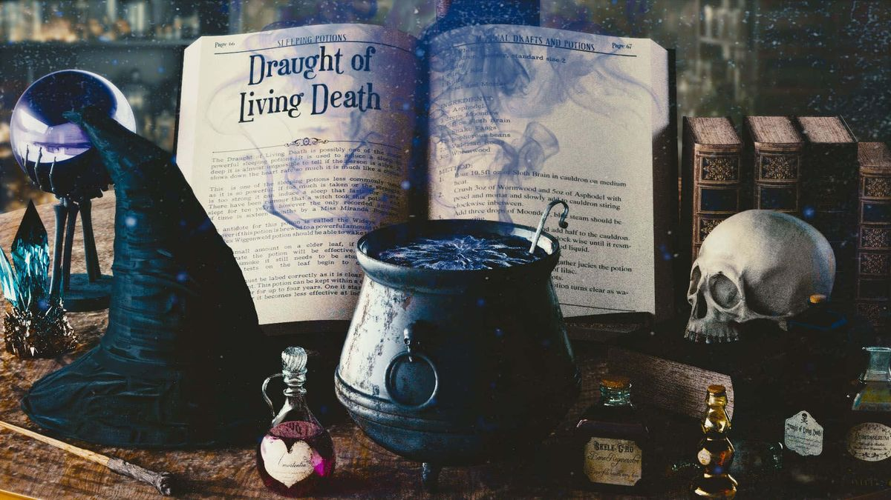
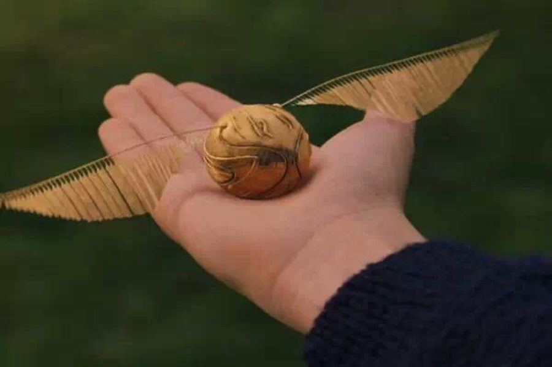

世界观预告
一个魔法与偏见共存的世界。光明与黑暗不是两个阵营，而是同一条道路上的不同选择。
世界基调
巫师世界拥有咒语、魔药、魔法生物、画像、幽灵、古老建筑，也拥有根深蒂固的等级观念、对差异的恐惧、对创伤的回避。善意可能带来毁灭，恶意可能源于被排斥的痛苦。这个世界不提供简单的答案。
故事时间
大战结束三十余年之后。公开的主流认知是黑暗势力彻底终结，战火归于历史。但百年前积累的创伤魔力，仍在土地、建筑、魔法生物身上低强度残留。
黑暗的来源
世界底层存在名为默默然的力量——年轻巫师长期压抑自身魔法，创伤催生的寄生型黑暗力量。它无法净化、无法彻底根除，只能依靠纯度极高的古代魔法短暂压制暴走。痛苦是它的温床。
古代魔法封印
1890年，新任守护者平定古代魔法失控危机，稳固贮藏库远古封印。封印结构完好，唯一弱点是被外部持续的魔力扰动缓慢侵蚀。如今，伏地魔的灵魂残片与百年默然暗影同化，化作无数黑暗共振节点，正从外部侵蚀封印——这是主线危机的根源。
公开认知 vs 真实历史
公开认知：黑暗势力已经彻底覆灭。真实历史：默默然从未消失，格林德沃的理念仍有残存信奉者，伏地魔的灵魂残片正在与百年默然暗影同化，古代魔法封印正在被侵蚀。魔法部知道一部分，霍格沃茨教职工知道一部分，残存圣徒知道一部分，没有人掌握全貌。
玩家的位置
你是百年之内唯一拥有古代魔法本源抗性的巫师。你的能力有边界：只能压制暗影暴走，不能治愈创伤，无法消灭默默然，无法逆转世代流传的偏见。你不是救世主，只能阻断仪式、保护身边的人、压制暴走。
核心主题：只能压制，无法根除
古代魔法压不住创伤，魔法部管不住偏见，圣徒说不清答案。玩家能做的只有保护、压制、阻断仪式——不能治愈、不能消灭、不能逆转偏见。这就是本世界的主题边界。
暗线叙事规则（游戏内全程遵守）：不存在单独的暗线专属任务，所有伏笔对话、环境文本全部嵌入普通任务流程，与普通对话共用同一套表现形式——没有高亮、没有闪光特效、没有专属提示音效、没有弹窗提醒、不写入任务面板。真假线索混杂，顿悟依靠玩家记忆与意象共鸣，不强制触发。错过伏笔，永久丢失。
势力与种族速览
八股力量，各自只知道一部分真相。没有人掌握全貌。
| 势力 | 定位 | 行为准则 | 台词风格 |
|---|---|---|---|
| 魔法部 | 官僚体系 | 优先执行沿用百年的隔离管控规章，先隔离再调查，很少深究创伤根源；档案管理严格，部分卷宗需权限 | 官方、克制、程序化；一线外勤可私下抱怨 |
| 残存圣徒 | 分散留存的理念信奉者，并非大规模武装组织 | 认为魔法界强行划分光明与黑暗、排斥创伤巫师，才是灾厄根源；不主动长篇宣讲，战斗落败抛半截问句 | 简短、急促、带质疑；不点名，不提私人往事 |
| 霍格沃茨 | 教职工大多只有碎片化模糊认知 | 主线内给出默默然基础解释；课堂闲谈浅尝辄止；邓布利多画像克制回避过往 | 教学口吻、克制、留白 |
| 妖精 | 重视契约与族群历史 | 问到封印历史会答，问到外来巫师直接说旧事不值一提 | 务实、简短、带契约意识 |
| 马人 | 禁林原住民 | 一贯隐喻风格，不主动解释预言含义 | 星象、星辰、微光、寂灭意象 |
| 家养小精灵 | 厨房、储藏室、休息室日常服务者 | 忠诚、务实、带善意，不参与主线冲突 | 服务口吻，赫奇帕奇支线涉及食材纠纷与告别宴会 |
| 幽灵 | 城堡历史的见证者 | 会聊城堡往事，不直接解释暗线；记住很多活着时候的小事 | 怀念式叙述 |
| 画像 | 环境叙事与暗线伏笔载体 | 长廊老画像分三阶段：一年级缄默面壁 → 五年级邻像闲聊 → 七年级决战前侧身；状态随主线自动切换 | 年长沉稳男声，语速偏慢，句子间留长停顿 |
主线任务 · 完整七学年（13 条）
主线必做，解锁学年进度。以下伏笔植入点位全程无 UI 标记、无任务提示，错过即永久丢失。

入学 · 长廊里的叮嘱
1-01长廊里的叮嘱
触发新生入学仪式结束、完成分院后，进入城堡西侧长廊指定区域，区域强制触发，无需点击 NPC
怎么做黄昏路过长廊，麦格教授独自站在盔甲塑像旁。她会说：天赋耀眼的人很多，但有些人走着走着，就停在了半路；力量本身不是过错，懂得控制力量，才是巫师一生的课题。听完即可
伏笔这句话写入玩家记忆碎片，作为七学年终局台词的对应锚点
奖励：霍格沃茨新生长袍、基础魔杖、城堡简易地图
1-02禁林边缘的异动
触发完成 1-01 后，海格小屋门口点击海格
怎么做海格委托你在禁林外围巡查一圈，标记几处异常扰动的位置。切记不要跨过古老的橡树界碑；触碰界碑会触发警告，两次触碰后任务仍可完成，但海格会加重提醒。巡查完返回海格小屋
分支对话选项仅改变台词；巡查触碰界碑触发额外警告
奖励：基础回复药剂、南瓜汁
旧课本的低语与密室的流言
2-01会低语的旧课本
触发完成 1-02、开启二年级课程后，魔咒课教室课后，弗立维教授主动叫住你
怎么做读那本二手课本上的批注，耳边会传来模糊断续的低语：力量……不必压抑……裂痕终将扩大。向弗立维复述你听见的内容，他会告诉你这是残留的情绪——无法掌控的魔力会吞噬持有者
伏笔魔咒教室永久保留这本低语课本，后续学年路过可再次听见微弱低语
奖励：咒语·无声咒入门
2-02密室流言
触发完成 2-01 后，城堡走廊听见学生们议论，自动触发
怎么做走廊墙上出现暗淡的银色字迹，幽灵差点没头的尼克会飘过来提醒你：别被流言裹挟，仇恨长久徘徊在石墙之间。前往图书馆查阅旧校报，返回走廊与尼克对话
伏笔查阅档案时仔细阅读，会额外获得一段碎片化文字，无奖励，仅伏笔
奖励：图书馆特殊阅览许可
摄魂怪的阴影与古老魔法残痕
3-01摄魂怪的阴影
触发完成 2-02、开启三年级后，霍格莫德村口遇到卢平教授
怎么做远望荒原上缓慢移动的灰雾——摄魂怪。跟随卢平练习守护神咒：不必强求召唤实体，先学会集中内心快乐的记忆抵御寒意。练习成功与否仅改变对话，主线流程不变
奖励：咒语·呼神护卫
3-02古老魔法残痕
触发完成 3-01 后，禁林深处古老石阵，靠近自动触发
怎么做触碰发光的淡蓝色古代魔法纹路，脑海中涌入碎片画面：一名巫师释放强大魔法，魔法失控撕裂周遭大地。邓布利多会走到石阵旁，告诉你力量本身中立，但即便是善意也可能带来毁灭性后果
伏笔石阵纹路会在特定天气下重新发光
奖励：古代魔法基础感知
圣徒伏击与密信
4-01圣徒伏击
触发完成 3-02、开启四年级后，霍格莫德外郊山谷，跟随教授前往调查魔法异动
怎么做圣徒埋伏在山谷，战斗触发。他们的目标并非击杀，是搜寻关于默然者的情报。战斗结束敌人撤离，山谷战场留下灼烧痕迹
奖励：防护药剂
4-02圣徒密信
触发4-01 战斗结算完毕，密信自动存入背包（无需手动拾取）
怎么做打开背包取出泛黄密信——字迹潦草，墨水部分被灼烧：目标依旧潜伏。默然者的力量值得被解放……我们继续搜寻，等待时机。邓布利多抵达战场，告诉你圣徒误解了这份力量，并叮嘱此事暂时不要大范围散播
伏笔城堡内增加教授之间私下讨论圣徒活动的隐藏对话
奖励：黑魔法防御术高级笔记
疏散演练与暗流涌动
5-01城堡疏散演练
触发完成 4-02、开启五年级后，城堡大礼堂，集会自动触发
怎么做跟随指引，带领一小队新生走完撤离路线。新生途中会受惊乱跑，你可以选择安抚或直接赶路——选择安抚解锁一句额外对话。演练结束返回礼堂，城堡密道全部解锁
奖励：应急烟雾药剂
5-02暗流涌动
触发完成 5-01 后，图书馆密室档案区，邓布利多等候玩家
怎么做档案室堆满格林德沃鼎盛时期的卷宗。邓布利多告诉你：圣徒持续搜寻默然者，证明他们在谋划更大的行动；格林德沃曾经是极为出色的巫师，只是选择了一条毁灭的道路
伏笔图书馆档案室新增一批格林德沃时代档案可供阅览
奖励：古代魔法抗性护符
抉择的岔路口
6-01抉择的岔路口
触发完成 5-02、开启六年级后，天文台顶楼，黄昏
怎么做晚霞铺满天空，邓布利多站在石栏边：光明与黑暗的界限，远比课本描述模糊。三个选项标记你的立场——① 我会站在光明一方；② 我愿意保持中立；③ 力量才是一切。中立不是冷漠，是看清两边的代价之后依旧守住内心的底线
分支立场影响七年级部分对话、隐藏剧情开放权限；选择中立不影响主线通关，但解锁额外内容
奖励：高级护盾药剂
两条长廊 · 聚合体 · 星火余影
7-01两条长廊
触发完成 6-01、开启七年级终章后，城堡主厅，NPC 提示前方有两条路
怎么做自主选择：走画像长廊，会看到一幅双人画像侧身而立、只露半边轮廓，不主动对话（7-03 前置）；走东侧楼梯则直接前往决战场地，错过画像长廊伏笔。抵达后邓布利多说明：这场战斗不是为了单纯消灭敌人，而是阻止一场巨大的悲剧
奖励：终极战斗药剂包
7-02三重黑暗聚合体
触发完成 7-01 后，进入决战场地
怎么做空间扭曲、黑雾翻涌，聚合体显现：世人执着划分明暗，滋养一代又一代灾厄。战斗不以击杀为唯一目标，目标是阻断仪式。战斗结束，聚合体最后的声音回荡：有些人走着走着，就停在了半路——与一年级 1-01 麦格教授的台词形成完整意象对仗。六年级立场不同，决战收尾台词不同；中立玩家获得额外独白
奖励：终局称号「守秘之人」（静默解锁，无弹窗）
7-03星火余影【彩蛋主线】
触发完成 7-02，且 7-01 阶段选择长廊见过侧身双人画像后，主动回到长廊点击双人画像
怎么做长廊安静，其余画像全部沉睡，只有这幅画像缓缓转向你：我们当年没能看懂的，你看懂了。画面浮现一段无声短片——戈德里克山谷夏日景象。短片结束，画像恢复安静
失败条件7-01 走东侧楼梯的玩家，点击画像仅触发基础慰问台词，彩蛋永久无法解锁
奖励：专属隐藏称号「双子星火」、解锁纪念短片
支线体系 · 42 条
纯日常 16 ｜ 轻伏笔 8 ｜ 学院专属 12 ｜ 人物羁绊 6。支线不强制，不锁主线升学。
格兰芬多
勇气不是毫无畏惧，是心怀恐惧依旧向前。
- G1-S01 遗失的狮子徽章 · 一年级
- G3-S02 营救受伤马人 · 三年级
- G5-S03 决斗训练 · 五年级
拉文克劳
智慧不止书本知识，是懂得质疑，不断思考。
- R1-S01 遗失星象手稿 · 一年级
- R4-S01 手稿排序 · 四年级
- R5-S02 预言碎片解读 · 五年级
- R6-S03 星轨预言 · 六年级
斯莱特林
野心本身无罪，卑劣手段才会玷污目标。
- S2-S01 密室铭文抄录 · 二年级
- S4-S02 毒草药剂调配 · 四年级
- S6-S03 密室誓约 · 六年级
赫奇帕奇
忠诚与坚持，常常是最容易被低估的力量。
- H2-S01 储藏室种子保护 · 二年级
- H4-S02 追踪走失獾类 · 四年级
- H7-S03 守护储藏密室 · 七年级
纯日常支线（16 条 · 可重复接取）
| 编号 | 名称 | 学年 | 怎么做 | 奖励 |
|---|---|---|---|---|
| 1-S02 | 照料独角兽 | 一年级 | 海格小屋旁兽栏：清理荆棘、投喂特制甜苜蓿。动作要轻 | 魔法生物饲料 |
| 1-S03 | 猫头鹰分拣 | 一年级 | 猫头鹰棚屋：分拣信件，区分本地与外地邮件，弄混猫头鹰会迷路 | 猫头鹰零食 |
| 1-S04 | 清理温室杂草 | 一年级 | 草药课温室：拔除带刺杂草，小心别伤到曼德拉幼苗 | 肥料 |
| 2-S01 | 鹰头马身有翼兽梳洗 | 二年级 | 海格小屋：先鞠躬再靠近，帮它梳理羽毛 | 兽类安抚药剂 |
| 2-S03 | 修复破碎玻璃器皿 | 二年级 | 魔药课教室：用修复咒修补打碎的药瓶 | 空魔药瓶 |
| 3-S03 | 护树罗锅守护 | 三年级 | 禁林边缘橡树：驱赶啃食树皮的小虫 | 小树枝护身符 |
| 3-S04 | 图书馆整理古籍 | 三年级 | 图书馆：把散落古籍放回书架、除尘 | 书签 |
| 3-S05 | 清理魔法溢散 | 三年级 | 城堡各处：使用消寂咒平息随机溢散的魔法光点 | 微量魔法粉末 |
| 4-S02 | 夜骐照料 | 四年级 | 海格小屋后方兽栏：投喂肉食、检查蹄子。能看见夜骐的人，都见证过死亡 | 黑色马鬃饰品 |
| 4-S03 | 修补城堡挂毯 | 四年级 | 城堡长廊：修复被皮皮鬼扯破的古老挂毯 | 丝线 |
| 5-S01 | 蒲绒绒饲养 | 五年级 | 神奇动物教室：收集蒲绒绒产出的绒毛 | 蒲绒绒绒毛 |
| 5-S03 | 送信前往霍格莫德 | 五年级 | 猫头鹰棚屋：把密封包裹送到霍格莫德商店老板手中 | 蜂蜜公爵糖果 |
| 6-S02 | 校准天文望远镜 | 六年级 | 天文台：调整镜片，观测星象记录 | 星图手稿 |
| 6-S03 | 精灵下午茶 | 六年级 | 厨房入口：帮家养小精灵准备下午茶点心 | 手工蜂蜜蛋糕 |
| 7-S02 | 城堡盔甲维护 | 七年级 | 长廊盔甲塑像：清理灰尘、修复松动部件 | 抛光布 |
| 7-S03 | 最后的温室收获 | 七年级 | 草药课温室：收获成熟魔法草药，存放进储藏柜 | 成品草药 |
轻伏笔支线（8 条 · 暗线藏于任务末尾闲笔，全程无提示）
| 编号 | 名称 | 学年 | 伏笔内容 | 奖励 |
|---|---|---|---|---|
| 1-S01 7-S01 前置 | 阁楼里的旧相片 | 一年级 | 阁楼角落木盒的褪色相片，两个少年并肩站在阳光下。旁白：山谷的夏日，曾经有两个灵魂同频 | 老旧相片碎片 |
| 2-S02 | 废弃信件 | 二年级 | 二楼废弃储物间，未寄出的信，残留片段：理念一致的时光太过短暂 | 泛黄信纸 |
| 3-S01 7-S01 前置 | 墓碑铭文 | 三年级 | 霍格莫德郊外小墓园，铭文磨损：不必为理想殉葬，但人总会为挚爱奔赴毁灭 | 墓园野花 |
| 3-S02 | 歌谣残页 | 三年级 | 图书馆冷门诗歌手稿区，无名歌谣讲述戈德里克山谷的夏日风暴 | 诗歌残页 |
| 4-S01 7-S01 前置 | 破损决斗记录 | 四年级 | 决斗俱乐部储藏室，旧羊皮纸记录两个天才巫师的一场对决 | 决斗记录残卷 |
| 5-S02 | 破碎镜子 | 五年级 | 禁林边缘小屋，碎裂镜子中倒影重叠两个人影 | 镜子碎片 |
| 6-S01 | 哲学家的辩论 | 六年级 | 天文台黄昏，老教授问：为了更大的善，可以牺牲少数人吗？中立玩家额外解锁隐藏对话：曾经有两位巫师，也长久辩论这个问题 | 思辨笔记 |
| 7-S01 终极彩蛋 | 冥想盆里的残响 | 七年级 | 邓布利多办公室冥想盆。前置：完成 1-S01、3-S01、4-S01 三条支线。普通玩家只见两道模糊人影；哈迷可辨认戈德里克山谷场景 | 冥想盆记忆碎片 |
人物羁绊支线（6 条 · 完成前置轻伏笔并重复接取一次后解锁）
| 编号 | 名称 | 学年 | 羁绊内容 | 奖励 |
|---|---|---|---|---|
| 1-J01 | 看守人的心事 | 一年级 | 前置 1-S01。阁楼管理员望着旧相片：有些爱，会被时代评判为错误 | 管理员金属书签 |
| 2-J01 | 信的遗憾 | 二年级 | 前置 2-S02。储物间管理员：这封信始终没能寄出，两个人走向不同道路 | 旧丝带 |
| 3-J02 | 墓园的怀念 | 三年级 | 前置 3-S01。墓园看守：很多埋葬在这里的人曾满怀理想，理想燃烧殆尽后只剩墓碑 | 干花束 |
| 4-J03 | 决斗者的遗憾 | 四年级 | 前置 4-S01。决斗俱乐部管理员：那场决斗不是仇恨开启，而是理念决裂，昔日知己兵刃相向 | 旧决斗手套 |
| 5-J04 | 镜中残影 | 五年级 | 前置 5-S02。禁林小屋看守：镜子可以映照外形，照不碎人心之间的裂痕 | 打磨镜布 |
| 7-J05 羁绊链终章 | 星火回响 | 七年级 | 前置：完成全部五条人物羁绊。阁楼黄昏，碎片拼合，浮现完整戈德里克山谷记忆：夏日阳光，两个少年畅谈他们新世界的构想——我们将一起重塑这个世界 | 称号「星火见证者」 |
学院专属支线仅本院可接，非本院玩家靠近触发 NPC 时无任何交互响应；多周目换学院可体验不同视角。
魔法地图
点击金色标记，查看该区域相关的任务与玩法（按《策划全局任务方案》V6.3 整理）


彩蛋与终局 · 静默顿悟
没有弹窗、没有提示、没有任务日志——只有记得的人，才能走到最后一步。

三重黑暗聚合体
被压抑、被排斥、被否定的魔法汇聚而成。痛苦不需要过错，只需要一个容器。世人划分明暗滋养灾厄——有些人走着走着，就停在了半路。
星火余影 · 双子星火
决战前走过画像长廊、见过那幅侧身的双人画像，战后主动回访——画像会说：我们当年没能看懂的，你看懂了。浮现戈德里克山谷夏日无声短片。
星火回响 · 星火见证者
完成全部五条人物羁绊，阁楼碎片拼合——夏日阳光，两个少年畅谈他们的新世界。那是他们最明亮的一刻，后来的毁灭掩盖了这份曾经的星火。
静默解锁规则
称号「守秘之人」「双子星火」「星火见证者」全部静默解锁——没有弹窗通知，只有主动打开个人称号列表才能看见。
终极彩蛋 7-S01 冥想盆：完成 1-S01、3-S01、4-S01 三条轻伏笔支线即可解锁戈德里克山谷完整回忆；未完成前置，只能看见山间村落远景和两个模糊人影轮廓。一段轰轰烈烈、最终走向毁灭的羁绊——很多故事，史书只会写下胜负，不会记录故事里人的真心。
结局留白短片自动播放，没有旁白、没有解说字幕，只用纯意象镜头叙事。

金色飞贼——它记住了第一个触碰它的人。
开发进度
立项于 2026 年 6 月 25 日。世界基准与任务方案已定稿（2026.10.19），实际速度取决于作者睡眠质量。
进度 3% —— 刚把饼画出来，面团都还没和。